1
Click Insights
It opens a ring of Hours this month by project, with a list beside it. The card also covers what nobody attributed. Click it again to close it.
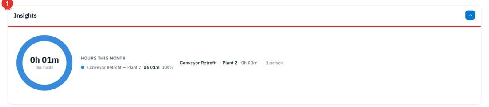
See which projects the hours went to, set a budget and a bill rate, decide where each project gets its hours from, and turn a period of hours into an invoice. Each step shows the exact button to click.
Do this to see where hours went. Open app.bpmsquare.com/wfm/projects. Hours are attributed from punches.
It opens a ring of Hours this month by project, with a list beside it. The card also covers what nobody attributed. Click it again to close it.

Search by name, job number or ID.
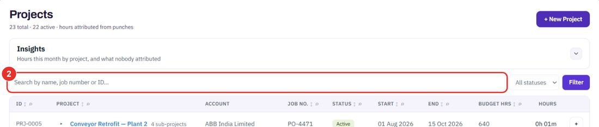
Planned, Active, On hold, Completed or Cancelled. Then click Filter.
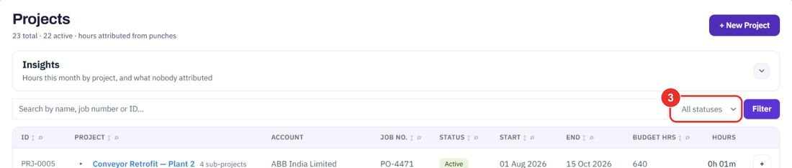
The list shows ID, Project, Account, Job no., Status, Start, End, Budget hrs and Hours. A project with sub-projects says how many.
This month, Last 90 days or Last 12 months. The page shows hours worked including sub-projects, the number of people, and the share of the budget used.
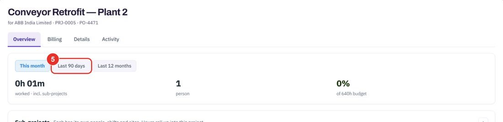
Do this when a new job starts. The name is the only thing needed to create a project; its ID is assigned for you.
It opens a short form called New project.
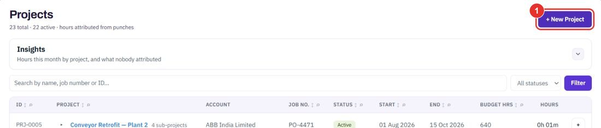
For example Pump room fit-out. Status starts as Active, which means it is collecting hours now. For account is optional; it is needed to bill the hours.
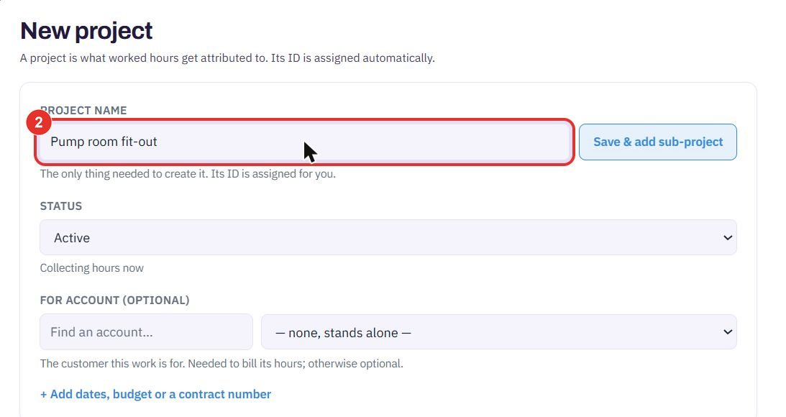
It adds Runs from, Until, Budget hours, Contract / PO number and Bill rate per hour.
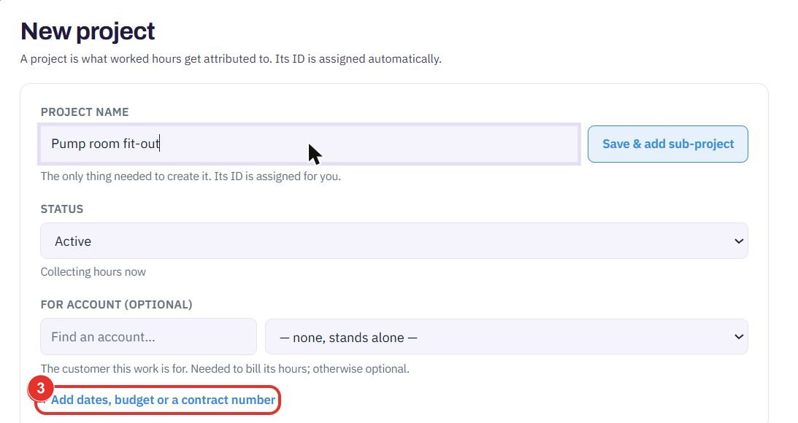
Above it sits Where its hours come from. Cancel leaves without creating anything.
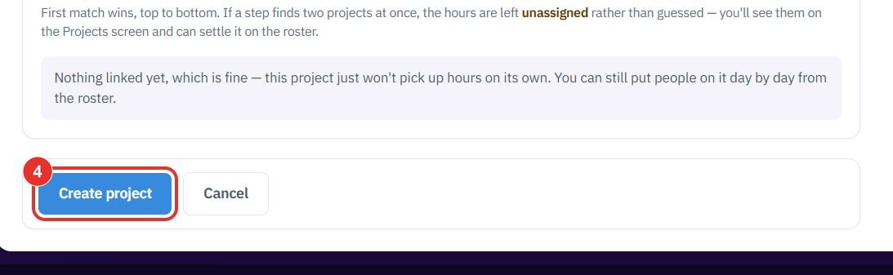
The same fields are on the project's Details tab, next to Overview, Billing and Activity. + Create sub-project is here too.
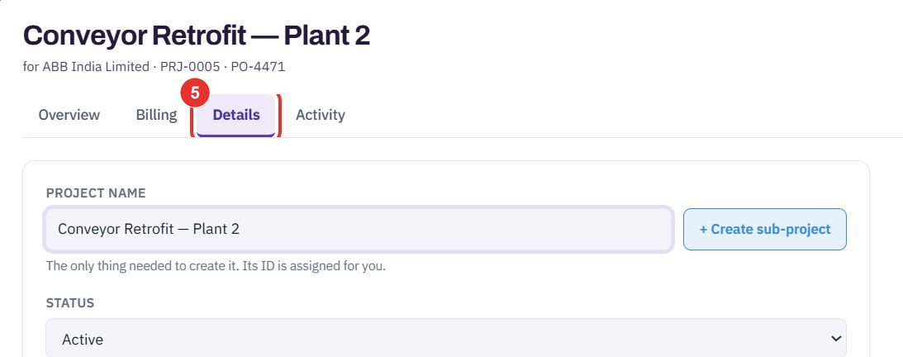
Only punches inside the dates count toward the project. The budget is what the percentage on the project page is measured against.
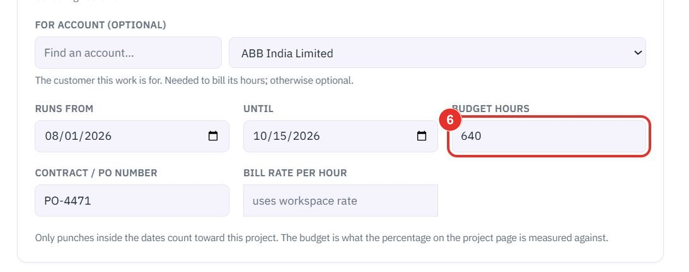
Leave it empty and the project uses the workspace rate.
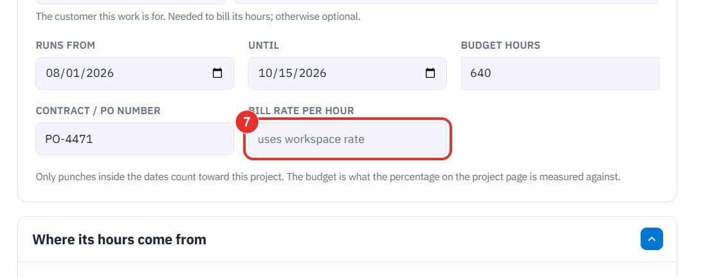
Nobody has to pick a project when they punch. Hours are worked out in four steps: the roster, People, Shifts, then Sites. First match wins.
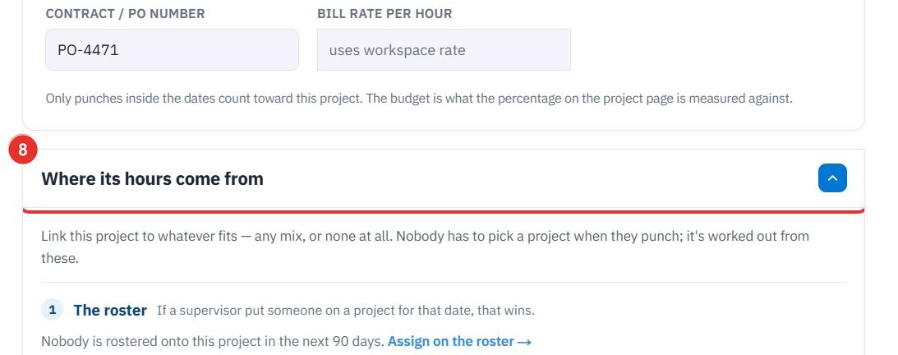
If two projects match at one step, the hours stay unassigned. They show on the Projects screen so you can settle them on the roster.
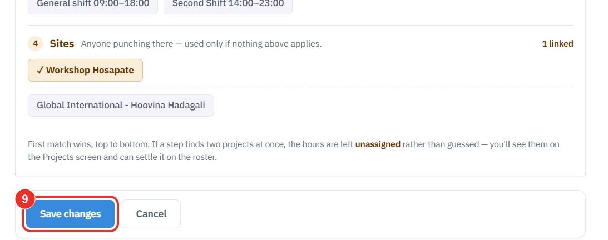
Do this once the hours are in. The project needs an account, because the customer is needed to bill its hours.
Open the project from the Projects list.
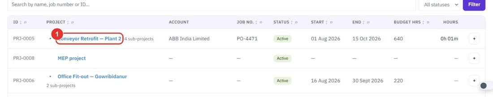
The card is called Bill hours. It says how many invoices were made from this project.
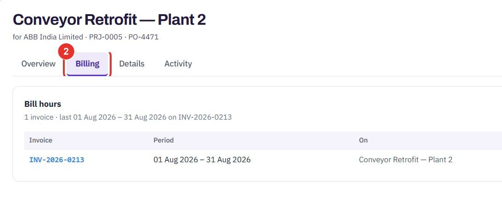
It starts an invoice for a period of hours. This guide does not click it.
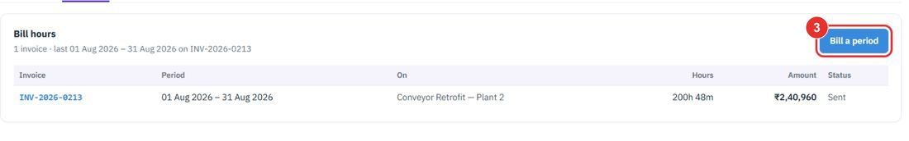
Each invoice made from the project is listed with Period, On, Hours, Amount and Status. The number opens the invoice.
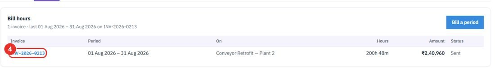
Twenty minutes on a live workspace, with your files and your team.